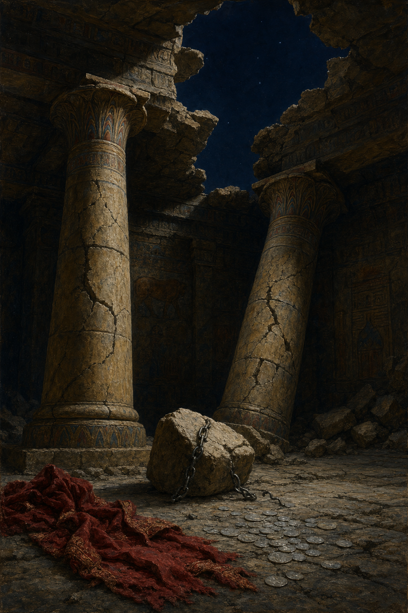

A DOMINION HOUR TEACHING PACK
Complete Mandate Pack · Illustrated Edition
A teaching from Dominion Hour with Prophet Prince Amo David
KJV throughout
Nine chapters. Twenty-one declarations. Ten prayer points. A seven-day devotional. A full workbook. Scripture in full, KJV. Illustrated throughout.
HOW TO READ THIS TEACHING
The Word of God, King James Version, quoted in full.
Biblical application — how the Scripture speaks into daily life.
The ministry emphasis received in the spirit of Dominion Hour.
The three labels are for study clarity — they do not divide the teaching. Every ministry interpretation was received in the spirit of the ministry and is tested by Scripture.
ANCHOR
Every word of this teaching stands on that Scripture. Read it three times before you go further. Read it slowly. Read it out loud. The Apostle Paul is not describing a metaphor. He is describing your actual life. You walk in a body. You live in a house. You go to a job. You have a family. But the war you are fighting is not with any of them. Your battle is against a realm you cannot see with natural eyes — and the weapons God has placed in your hand are not the weapons the world uses.
PART I
Nine chapters faithful to the message. Tap any chapter to open it.
CHAPTER ONE
“The enemy you see is often not the real enemy.”
— Prophet Prince Amo David
⚑ Ministry Interpretation
There are forces behind the scenes. There are powers behind the scenes. There is an unseen realm, and everything that happens in the visible world was first decided in the invisible one. If you fight only what you can see, you have already lost — because what you can see is not what is fighting you.
Every one of those visible events came out of an invisible decision made somewhere you cannot see.
Life is not partly spiritual. Life is not mostly natural with a spiritual side. Life is 100% spiritual. You cannot outwork a curse. You cannot out-earn an altar. You cannot out-charm a demonic assignment. You cannot out-argue a spirit. Only the Spirit of God, given weight in your life through prayer, the Word, the blood of Jesus, and holy living, can pull down what has been raised against you.
Where in your life have you been trying to solve a spiritual battle with a natural strategy? Name it out loud. Then say: “Today I take this battle to the realm where it belongs — the realm of the Spirit.”
THE ENEMY BEHIND THE SCENES — THE PATTERN
Every enemy behind the scenes moves through these seven stages. Every stage can be interrupted by prayer.
CHAPTER TWO
Just as God predestined your destiny, the enemy has scripted his attack. Both cannot stand — only one will finish.
⚑ Ministry Interpretation
The enemy has deployed demonic entities to act out a script. There is a director. There is a scene. There is a cast. Unless you understand this, you will spend your life reacting to actors and never confronting the director.
There are two scripts written about your life. The first is written by God. It began before you were born. God predestined your destiny, your purpose, your inheritance, your generational impact.
But there is a second script. The enemy has also set attacks. There are lines rehearsed to be spoken over your marriage. There are scenes staged to happen at your workplace. There are exits written for you at the very moment your breakthrough should arrive. And some of the actors in the enemy’s script can be your own family. Your own friends. People who eat your food.
What did the Holy Spirit show you as you read this chapter? Write it down here so you do not forget.

CHAPTER THREE
Delilah was in the bedroom. But the real enemy was in the chamber next door — with a bag of silver in his hand.
⚑ Ministry Interpretation
Delilah was not the real enemy. The lords of the Philistines were. They were the ones with the assignment. They were the ones with the money. She was only their instrument. And this is the case study that anchors the entire teaching: the visible person in front of you may not be the one who is really moving against you.
“Father, expose every Delilah in my life. Show me the ones I have trusted with the secrets of my strength. And show me the lords behind them — the ones who are paying, the ones who are watching, the ones who are waiting to bind me. In the name of Jesus.”
CHAPTER FOUR
Every altar speaks. The question is whose voice is speaking on your behalf.
An altar is a place of exchange. Something is given, and something is spoken. Every altar has a voice. Every altar continues to speak until someone silences it. The altars raised in your bloodline before you were born may still be speaking. That is why some cycles keep repeating — a poverty pattern, a marriage pattern, a sickness pattern, a rage pattern — because there is still an old altar somewhere speaking against your line.
“Every altar my fathers raised that was not the Lord’s altar, I renounce today. Let the fire of the Holy Ghost consume every voice speaking against my bloodline. Let only the altar of the Lord Jesus Christ speak on our behalf. Amen.”
CHAPTER FIVE
The moment the anointing becomes entertainment, the pillars begin to shake.
Samson’s last public appearance was not a sermon. It was a show. The anointed one was reduced to entertainment for the very people God had raised him up to fight. This is a warning to every gifted, called, and anointed believer: do not become the entertainer at the enemy’s party.
Where in your life has the anointing quietly been reduced to entertainment? Where have you performed rather than prayed? Where has ministry become show?
CHAPTER SIX
There are summoning spirits. There are witches, wizards, sorcerers, seers, ancestral altars, and spirit spouses that call souls out of their alignment with Christ. The Bible is clear that such things exist and that the believer must contend with them by the Word, the blood, and the name of Jesus.
“Lord, my soul belongs to Jesus Christ. Every summons over my soul, every ancestral call, every altar that keeps calling my name — I break it now in the name of Jesus. My soul returns to its place. The snare is broken.”
CHAPTER SEVEN
The believer does not fight for victory. The believer fights from victory that has already been won at Calvary.
Christ has already disarmed principalities and powers at the cross. We do not war to gain territory — we war to enforce a victory that has already been legally secured. This is why our weapons are “mighty through God.” They carry the weight of a finished work, not the weakness of a hopeful attempt.
Commit 2 Corinthians 10:3-5 to memory this week. When the enemy speaks, quote this Scripture aloud.
CHAPTER EIGHT
There is a moment when heaven reassigns a life. The old assignment is finished. The old atmosphere is over. The old chapter is closed. And a new mandate is given. This is the shift. Do not resist it. Do not mourn what God is releasing you from.
What is heaven asking you to release, and what is heaven asking you to receive? Write both, side by side.
CHAPTER NINE
This is the closing charge. Every reproach — sevenfold return. Every prisoner — heaven remembers. Every silenced generation — the sheep of His pasture will give thanks forever.
“Today I will not die with my enemies. Today the gates open. Today heaven remembers me. Return, Lord. Return it. Return it, Lord. Return it. Return it.”
PART III
Verbatim from the ministry. Original order preserved.
DECLARATION CARD
Print this section. Fold it. Carry it in your Bible. Voice it aloud daily until the exposure is complete.
PART IV
Job 22:29 · Joel 2:25-26 · Isaiah 61:7
“Lord, restore to me the years the locust has eaten. Where the enemy stole, let there be sevenfold recovery.”
Psalm 79 · Proverbs 6:30-31 · 1 Kings 18:40
“Lord, let every case against my life be settled in Your courts. Let every thief who ate from my table restore sevenfold.”
1 Corinthians 10:13 · Exodus 12:29-33
“Lord, make me a way of escape. As You brought Israel out of Egypt at midnight, bring me out of every place of bondage.”
PART V
Each day has a different activity. Do not treat them as identical.
The Unseen Realm. Today, do not pray a long prayer. Simply notice. All day, at moments of frustration, ask the Holy Ghost: “What is really happening here — beyond what my eyes see?” Write down three moments the Spirit shows you. Declaration: “I will not fight this battle on the wrong field.”
Scripted Attacks. Take 20 minutes. Write out every recurring attack pattern in your life over the last 5 years. Look for repeats. Circle any that share a season, an anniversary, or a common face. That is the enemy’s script — now you can see it.
Delilahs and Lords. Pray by name over every relationship where you have been betrayed. Ask the Lord to expose the ones who paid the “silver” behind them. Do not curse people — cancel assignments.
Family Altars. Fast one meal today (as your health permits). Use that time to renounce every altar your bloodline raised that was not the Lord’s. Apply anointing oil to your doorposts and pray Leviticus 6:12-13.
Anointing vs Entertainment. Gather your family (or a prayer partner). Ask each other: where has our home slipped from prayer to performance? Recommit together to guarding the anointing.
The Warfare Text. Commit 2 Corinthians 10:3-5 to memory. Say it aloud every hour today. Let it become your reflex when the enemy speaks.
What Heaven Has Done. Write out or voice-note one testimony from this week — one thing the Lord exposed, delivered, or restored. What you testify, you keep.
PART VII
Four lists. Photograph the page. Post them on your wall.
CLOSING CHARGE
Return, Lord.
Return it.
Return it, Lord.
Return it.
Return it.